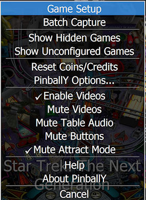

PinballY has a "hidden" menu for special setup functions, known as the Operator Menu. This menu is intentionally somewhat hidden, so that it doesn't clutter up the screen with technical options during normal play, and so that you don't have to worry about "civilians" playing games on your cab accidentally messing up your configuration by accessing setup functions.
By default, the Operator menu is accessed with the "0" (digit zero) key. (That's the digit zero, not the letter O). This is the default key assignment because it matches the VPinMAME mapping for the "Service Enter/Select" button, which corresponds to the button on a real pinball machine that the owner/operator would use to access the machine's setup menu. On a real machine, this button is hidden inside the locked coin door, to prevent any teenagers at the arcade from adding 10,000 credits or setting the reply score to 10 points. If you're running PinballY on a pin cab with a real coin door, and you've set up your coin door service buttons with the VPinMAME mappings, then you can access the PinballY Operator Menu using that same coin door button you'd use to bring up the Operator Menu on any WPC game.
If you want to remap the Operator Menu to some other key, open the Settings dialog, go to the Buttons page, and change the assignment for the Service 4/Enter button.
Game Setup: Brings up the Game Setup menu, which has commands for configuring the currently selected game.
Show Hidden Games: Selects the "hidden games only" filter, which makes the wheel UI show all of the games that you've previously marked as "hidden". You can mark a game as hidden when you want to keep it from showing up in the normal wheel UI; for example, you can hide old versions of games that you no longer want to play but still want to keep around as backups or for reference purposes. The "hidden games" filter lets you review all of the games you've previously hidden, which can be useful if you want to un-hide a game.
To return to the normal display, you can either select a different filter (including "All Tables") from the main menu, or you can return to the Operator Menu and un-check the Show Hidden Games option.
Show Unconfigured Games: Selects the "unconfigured games only" filter, which makes the wheel UI show only games that don't have any details entered. This can be useful if you want to methodically go through your games and enter details for any games that aren't already configured.
To return to the normal display, you can either select a different filter (including "All Tables") from the main menu, or you can return to the Operator Menu and un-check the Show Unconfigured Games option.
Reset Coins/Credits: Zeroes the internal counters for coins and credits.
PinballY Options: Shows the Options dialog.
Enable Videos: Check or un-check this item to allow or disable video playback. If you un-check this, still images will be displayed instead of any videos for all of the windows.
Mute Videos: Check this item to mute the audio portion of the playfield video. (Videos in other windows are always muted.)
Mute Table Audio: Check this item to disable playback of table audio tracks.
Mute Buttons: Check this item to disable the sound effects normally played when you press the navigation buttons.
Mute Attract Mode: Check this item to disable all audio playback when attract mode is active.
Help: Opens the help files.
About PinballY: Shows the PinballY "about box", with information on the program version and which subsystems are being used.
Cancel: Closes the menu.